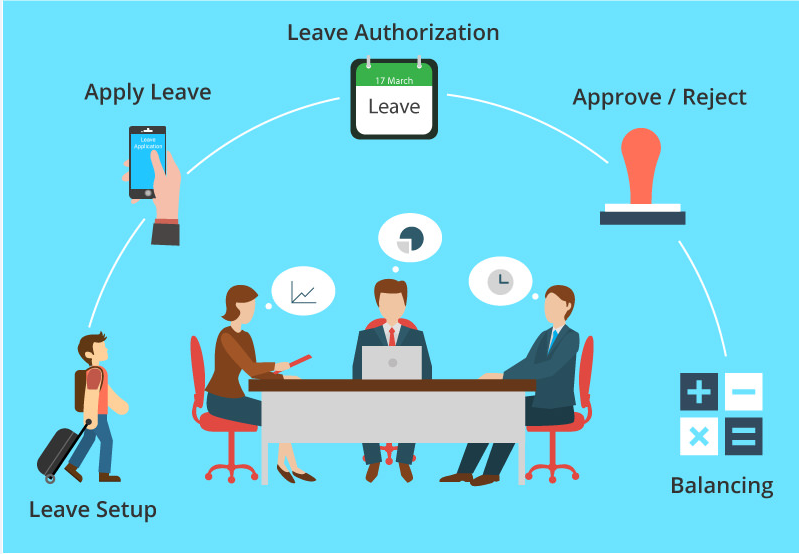
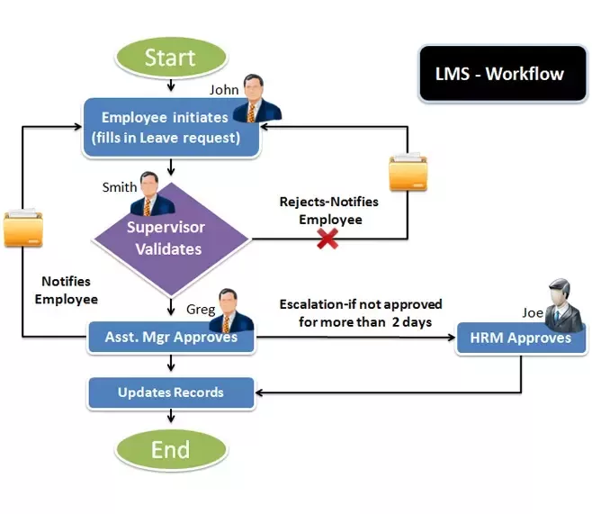

Leave Management
An online leave management system is a web-based leave management application that automates every step of the employee leave management process without compromising on functionality. Unlike on-premise leave management tools, an online leave management system gives employees the freedom to apply, approve, reject, and manage leave requests from any place, any time, and from any device.
Steps to be followed:
1. Create a custom leave process.
2. Configure the approval workflow.
3. Configure a list of holidays.
4. Set deadlines and accessibility controls.
5. Track available and used days left.
6. Create and export reports.

 